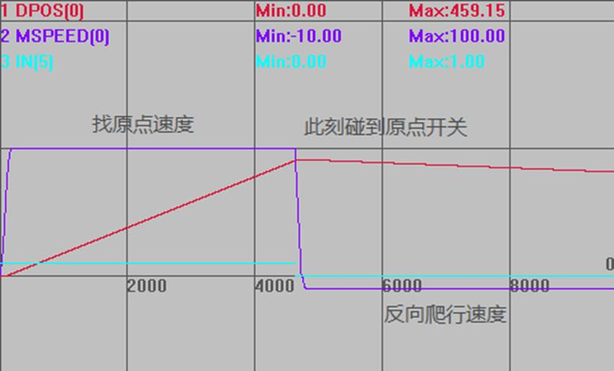
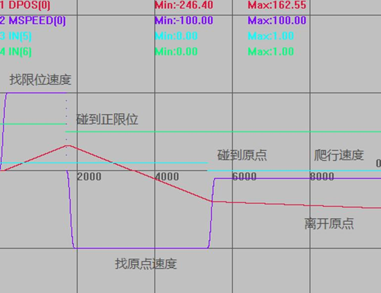

|
类型 |
单轴运动指令 | |||||||||||||||||||||||||||||||||||||||||||||||||||||||
|
描述 |
单轴找原点运动。
原点开关通过DATUM_IN设置，正负限位开关分别通过FWD_IN和REV_IN设置。 ZMC控制器为0触发有效，输入为OFF状态时，表示到达原点/限位，常开类型信号需要采用INVERT_IN反转电平。 ECI控制器为1触发有效，输入为ON状态时，表示到达原点/限位，常闭类型信号需要采用INVERT_IN反转电平。 Z信号回零必须配置为带Z信号ATYPE（ATYPE=4或者7）。 若配置了LSPEED，找到原点急停，速度降为LSPEED时的位置为原点位置。
多轴回零时，需要每个轴都使用DATUM指令。 总线控制器使用控制器找原点模式完成后，需要手动清零MPOS。 DATUM指令后不能接绝对指令和mover指令。 驱动器回零DATUM指令是监控不到的，需要使用驱动器回零里面的驱动器状态返回值 | |||||||||||||||||||||||||||||||||||||||||||||||||||||||
|
语法 |
DATUM (mode)，DATUM(21,mode2) mode：找原点模式，加10表示碰到限位后反找，不会碰到限位停止，例如13=模式3+限位反找10，用于原点在正中间的情况。 ATYPE=4，回零模式加100（模式100+n和110+n分别对应n和10+n），表示接入编码器后可以自动清零MPOS(仅限4系列) DATUM（0）AXIS（轴号）清除指定轴的错误状态。
mode2：mode=21时有效，缺省0，非0时设置到驱动器回零方式，根据驱动器手册数据字典6098h设置值。 | |||||||||||||||||||||||||||||||||||||||||||||||||||||||
|
适用控制器 |
通用 | |||||||||||||||||||||||||||||||||||||||||||||||||||||||
|
例子 |
例一 直接找原点 BASE(0) DPOS=0 ATYPE=1 SPEED = 100 '找原点速度 CREEP = 10 '反向爬行速度 DATUM_IN=5 '输入IN5作为原点开关 INVERT_IN(5,ON) '反转IN5电平信号，常开信号进行反转(ZMC控制器) TRIGGER '自动触发示波器 DATUM(3) '轴0先以100units/s正向回零，找到原点后以10units/s直到离开原点，同时DPOS清0
运动轨迹与速度曲线 DPOS(0)垂直刻度500 MSPEED(0)垂直刻度100 IN(5)垂直刻度10  碰到原点开关之后反向爬行直到离开原点开关，此时DPOS清0，回零运动完成。为了直观体现，所以爬行过程比较长，实际应用中，爬行过程很短。
例二 遇到限位反找原点 BASE(0) DPOS=0 ATYPE=1 SPEED = 100 '找原点速度 CREEP = 10 '反向爬行速度 DATUM_IN=5 '输入IN5作为原点开关 FWD_IN=6 '输入IN6作为正限位开关 INVERT_IN(5,ON) '反转电平信号，一般常闭的信号才进行反转 INVERT_IN(6,ON) TRIGGER '自动触发示波器 DATUM(13) '轴0先以100units/s正向运动找原点，碰到正限位反向运行，仍以100units/s找原点，找到原点后以10units/s直到离开原点，同时DPOS清0 wait until READ_BIT2(6,AXISSTATUS(axisnum))<>1 OR MTYPE(axisnum) <> 12
运动轨迹与速度曲线 DPOS(0)垂直刻度500 MSPEED(0)垂直刻度100 IN(5)垂直刻度10 IN(6)垂直刻度10，偏移5 
例三 EtheCAT总线回零(松下A6N伺服) 先根据EtherCAT初始化例程正常使能电机 SPEED=100 '找零速度*UNITS后自动写入6099 CREEP=10 '爬行速度*UNITS后自动写入6099
ACCEL=1000 '加减速*UNITS后自动写入609A DECEL=1000 DATUM(21,0) '按驱动器的回零模式0开始回零，此时按驱动器信号判断，而不是按控制器信号判断 WHILE 1 TABLE(0)=DRIVE_STATUS '读取状态字判断回零状态 IF READ_BIT2(10,TABLE(0)) THEN '根据下图确定 IF READ_BIT2(12,TABLE(0)) THEN ?"回零完成" ENDIF ENDIF WEND END
驱动器厂家的回零过程可能不同，具体根据驱动器手册确定。 状态字的bit13，bit12，bit10的值组合含义如下表：
例四 Rtex总线回零(松下A6N伺服) 先根据Rtex初始化例程正常使能电机 SPEED=100 '找零速度 ACCEL=1000 '加减速 DECEL=1000 DATUM(21,$11) '按驱动器当前回零模式开始回零，此时按按驱动器信号判断，而不是按控制器信号判断
根据驱动器手册确定回零模式
| |||||||||||||||||||||||||||||||||||||||||||||||||||||||
|
相关指令 |